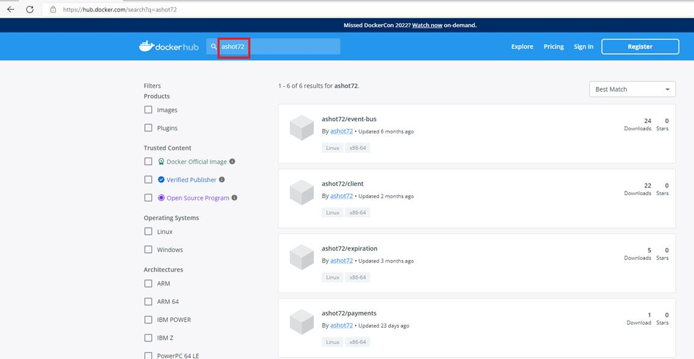
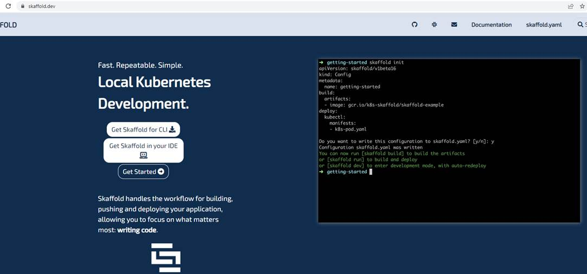
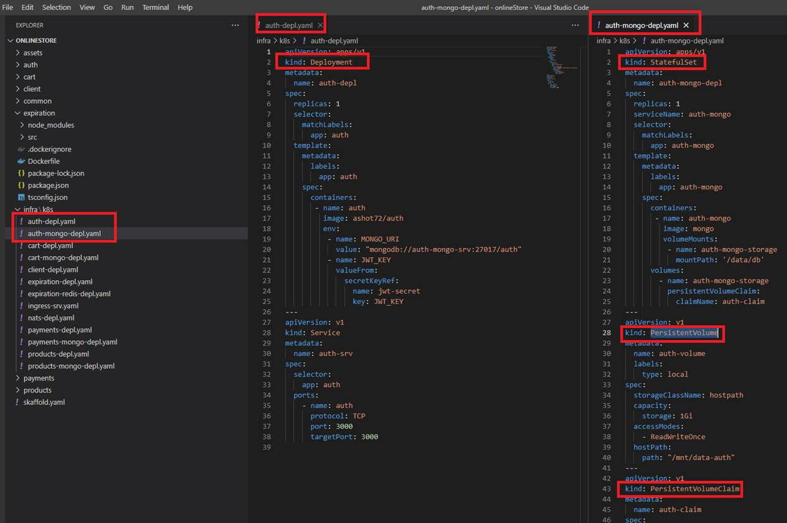
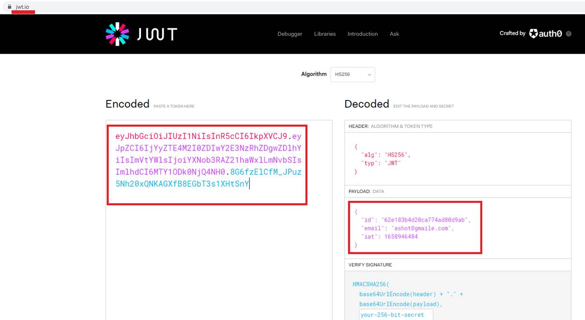
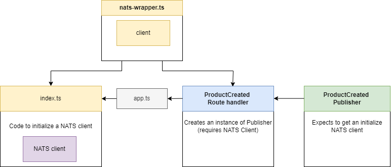
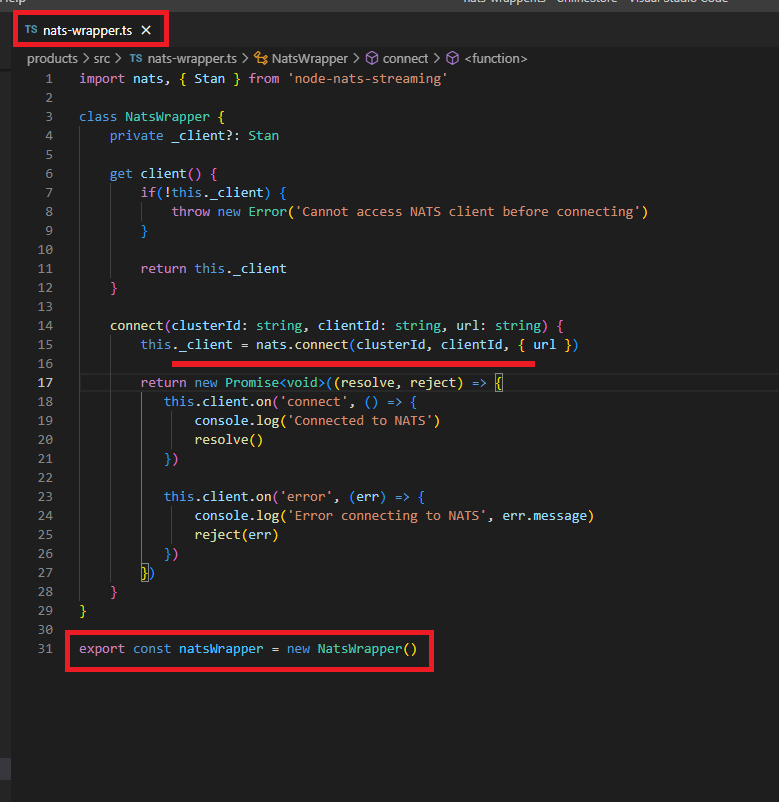
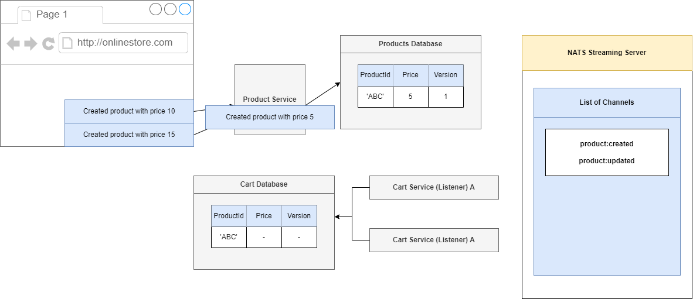
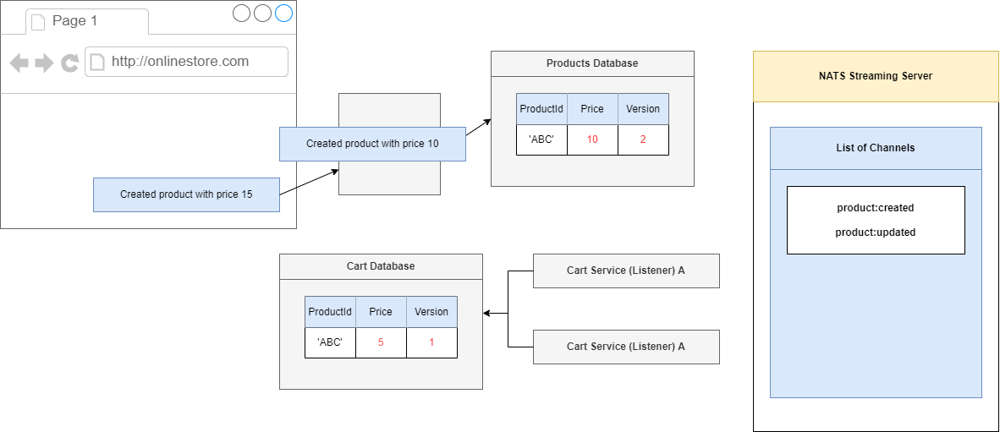

Microservices-Based Online Store
Video: https://youtu.be/Mb2B3ByuvJ0
GitHub Repo: https://github.com/Ashot72/Microservices-based-Online-Store
I built an Online Store Next.js (React) app using Microservices.
Figure 1
The monolithic architecture is considered to be a traditional way of building applications. A monolithic application is built as a single unit.
Usually, it is based on a client-side user interface, a server-side application and a database. Normally monolithic applications have one large
code base and lack modularity. If developers want to update or change something, they access the same code base. They make changes in the
whole stack at once.
Figure 2
While a monolithic application is a single unit, a microservices architecture breaks it down into a collection of smaller independent units. These
units carry out every application process as a separate service. All the services have their own logic and the database as well as perform the specific
functions.
Pros of Microservices
Scaling up becomes easier - In the microservices architecture each service is designed, developed and deployed independently. The entire system
need not be taken down and deployed again.
Leads to Improved Fault Tolerance - Applications within microservices could continue working even if one service fails. Failure of one microservice
does not affect the working of others.
Ease of understanding of the codebase of the software system[LTA1] - As one module has one responsibility encapsulated within, it becomes
easier to understand the code base for that module.
Gives you scope for experimenting with different technologies - Developers have the flexibility to experiment with different technologies
while creating various services.
Independent Deployment of each module - Since microservices are separate modules, they can be deployed independently in any application.
If any module is modified, then the entire application need not be rebuilt and deployed.
Cons of Microservices
Increased Complexity of Communication Between the Services - Splitting an application into multiple smaller modules increases the communication overhead.
Developers have to be extra cautious while handling requests between the different modules.
Requires More Resources - With an increasing number of microservices, the resources needed to implement them increases as well.
Global Testing and Debugging is Difficult - With microservices-based applications, each service needs to be launched and tested individually first.
Then the application as a whole need to be tested again, once all the services are launched.
Not Practical for Small Applications - Microservices architecture is a good option for bigger applications. But, for smaller apps, it will probably be more
Time consuming and challenging to implement.
Relatively Complex Deployment - The deployment could be complicated and challenging procedure. It would need coordination between multiple services during
deployment.
Docker
What is Docker? - Docker is an open-source containerization platform. It enables developers to package applications into.
Why use Docker? - Docker makes it really easy to install and run software without worrying about setup or dependencies.
Figure 3
Docker image Is a file used to execute code in a Docker container.
A Docker image packs up the application and environment required by the application to run, and a container is a running instance of the image.
Install Docker desktop for windows https://docs.docker.com/desktop/install/windows-install/
The Docker client provides a command line interface (CLI) that allows you to issue build, run, and stop application commands to a Docker daemon.
The main purpose of the Docker Client is to provide a means to direct the pull of images from a registry and to have it tun on a Docker host.
Kubernetes
Kubernetes - is a tool for running a bunch of different containers together. It will automatically manage the creation and management all of these different containers.
It is also going to make it really easy for us to communicate between these containers as well.
Figure 4
Enabling Kubernetes on Docker for Windows.
Figure 5
In our project we have create Docker images. Here we are in client folder and create a docker image by running docker build.
Figure 6
Once it is created, we push it to Docker Hub by running docker push ashot72/client.

Figure 7
If you navigate to Docker hub https://hub.docker.com and search for ashot72 you will see our Online Store project images.

Figure 8
This is auth (authentication) service.
Figure 9
We took all Auth files and Dockerfile and fed them into Docker and this is an image for Auth service. Now we can create as many instances of this image or containers as we wish.
Figure 10
Whenever we want to use Kubernetes, we have to have a set of images that are already ready to go. We are going to create a container of this thing at some point in time. We want to deploy it
into our Kubernetes cluster. We have three separate Nodes. Node is a virtual machine. It is an essentially a computer that is going to run some number of containers for us. If you are running
Kubernetes on your own computer, it is extremally likely that you are only running one Node by default. So, you have one virtual machine. It is only once you start deploying to some cloud provider
you may have multiple Nodes.
Figure 11
To create a container out of the Auth image, we are going to first create a configuration file. In the configuration file we are going to list out some very explicit directions for Kubernetes.
We are going to say, please run 2 copies of the Auth image for us, make containers and host them somewhere on these Nodes. Inside that config file we are also going to say please
allow copies of Auth to be accessible. Kubernetes is going to look at your local machine and see if there is a copy of that image already. If it is not available then it will default to looking out
at Docker Hub and try to find a copy of that image there instead.
Figure 12
When Kubernetes finds the image, it is creating two containers because we asked for two, and randomly distributes it among these Nodes.
Each container that it is created is going to be hosted, or essentially created inside of something called a Pod. So, each container is going to create 2 Pods and each of them is
going to have a copy of the Auth container running inside of it.
Figure 13
In order to manage these two Pods, Kubernetes is also going to create something called a deployment. The deployment is going to read the configuration file and creates two copies of the Auth image.
The deployment is going to be in charge of managing both these Pods, if anything ever goes wrong with these Pods. If Pod crashes for some reason or if it just stops running or whatever else might
possibly happen this deployment is going to make sure that pos automatically gets recreate it for us.
Figure 14
Now, it is the second step here in the config file (Figure 11) Please allow us to access these services from other Pods or essentially containers inside of our Kubernetes cluster. To do so Kubernetes is going
to create something else called a service. Service is something that gives us access to running Pods or running containers inside of our cluster. It is handling networking among different micro services.
Figure 15
Kubernetes terminology.
We are going to create Kubernetes config files which will include Deployments, Pods, Services (referred to as Objects). It is written in YAML file.
The config files we are going to create are really documentation of what our Kubernetes cluster is doing.
Figure 16
The kind of object that we are trying to create is Deployment. We setup some metadata and we are just going to assign some name to it, auth-depl.
After that we will put in spec section which is going to specify exactly how this deployment should behave. The first property here is replicas with 1 which is the number of pods we want to create running
some particular image. Next is selector then matchLabels and then app auth. Then we have template then metadata, labels then app auth.
Figure 17
These two sections right here the selector thing and this metadata thing below really working together. A deployment kind of has a hard time figuring out which pods is should manage inside of our cluster.
If a set of pods get created, we have to somehow give the deployment some information and tell it that these pods over here you need to manage. That is the goal of this selector and metadata labels app
thing is all about.
The selector is saying take a look at all the different pods that have been created by an all the pods with a label of app auth. The template is where we specify the exact configuration of a pod that we want
this deployment to create. Configuration below template is some configuration that is going to be applied to the pod that the deployment is going to make. We want the pod to have a label of app auth.
After that we set up a spec. Everything inside the template can be really thought of as a pod spec or a pod config file. We have one container which should have a name of auth and should run image of our
docker id which is ashot72/auth. To apply this config file, we will run kubectl apply -f auth-depl.yaml command. After it the deployment should be crated.
Next, we are going to make use of services to set up some communication between all of our different pods or to get access to a pod from the outside of our cluster (Figure 14).
Figure 18
Types of Services.
Figure 19
If we want to setup some kind of communication between these different pods inside of a cluster the most appropriate service is Cluster IP type service because it only exposes pods to other pods inside
the cluster.
Figure 20.
If we want to access a pod from the outside the world like a browser running on our computer or some user's machine then in this scenario, we can use either a Node Port or Load Balancer. If we are in a
development environment and we just want to do a quick test or something like that we would use a Node Port but in just about every other scenario we are going to use a Load Balancer type service.
Figure 21
We are going to write out the configuration to create this new Cluster IP service where kind is Service. Metadata is going to have name auth-srv
Then we create a spec to setup a selector that is going to tell the service what pods it is going to allow to access to. In this case we want to use or we want to make sure that we tell the service to direct any
incoming traffic to the pod with a label of app auth-srv that is going to be the label that we are going to look for so we will provide that label to the selector field. We can optionally specify type ClusterIP. If
we do not specify a type for the service, Kubernetes will default to creating a ClusterIP service. Finally, we set up our port which is 3000 and targetPort 3000.
Now we can run Kubectl apply -f auth-depl.yaml command.
Figure 22
There are two distinct things in the world of Kubernetes. The first one is called Load Balancer Service. There is something that is closely related that is referred to as ingress or Ingress or Ingress Controller.
Load Balancer Service is going to be something that tells Kubernetes or specifically our cluster to reach out to its provider and provision a load balancer. The goal of a load balancer service is to get traffic
into a single pod. On the other hand, an Ingress or Ingress Controller is a pod that has set of routing rules in it that are going to distribute traffic to other services inside of our cluster.
Figure 23
We are going to imagine that we are running one singular pod in our cluster. Our cluster at some point time in the future is going to be running on some cloud provider, such as AWS or something similar.
We are going to somehow get traffic or network requests from the outside world to some pod inside of our cluster. How do we do that using a load balancer? We will create a config file for a load balancer
service. We will then feed that thing into our cluster using that same kubectl apply command. Load balancer service is a very special little thing just about all the objects we have been discussing. All our
stuff has been created inside of our cluster. We have created services inside the cluster, pods inside the cluster, deployments inside the cluster. A load balancer service is a little bit different. A load balancer
service is going to tell our cluster to reach out to its cloud provider.
Figure 24
A Load balancer exists completely outside of our cluster. It is part of Google Cloud, AWS. etc. Load balancer is going to be used to take traffic from the outside world and direct it to some pod inside of our
cluster. Load Balancer itself is not super useful right now. We want to get traffic distributed to a set of different pods and have some routing rules inside of something to decide where to send the traffic to.
Load Balancer is not doing everything we need and that is where this idea of an Ingress or Ingress Controller is going to come into play. Ingress or Ingress Controller is a pod that has a set of routing rules
inside of it. It is going to work alongside the load balancer service thing.
Figure 25
We want to get some outside traffic into these set of different pods. We are going to have a request coming into a Load Balancer that has been provisioned with a cloud provider. The Load Balancer is going
to send that request onto this Ingress or Ingress Controller. Ingress Controller should have a set of routing rules inside of it. The controller is going to look at the path of the incoming request and then
decide based upon that path whether to send the request onto that pod or another one. When we say send the request onto some pod, we mean sending it to some cluster IP service that it is sending
request onto that pod.
The Load Balancer is just about getting traffic into our cluster.
The Ingress Controller is about routing rules or having some routing configuration that is going to send requests off to the appropriate pod.
We are going to making use of a project called ingress-nginx https://kubernetes.github.io/ingress-nginx/deploy/ . This is a project that will create a Load Balancer Service plus an Ingress for us.
Figure 26
To install ingress-nginx we run the following command kubectl apply -f https://raw.githubusercontent.com/kubernetes/ingress-nginx/controller-v1.3.0/deploy/static/provider/cloud/deploy.yaml
Figure 27
If you open the deploy.yaml file you will see kind Deployment. We know that deployment creates and manages a set of pods.
It is creating something that is called a nginx-ingress-controller.

Figure 28
In the same file if we scroll down, we will see a config that makes a service of type Load Balancer.
Figure 29
We are essentially implementing this diagram be means of deploy.yaml config file.
We have now created an Ingress Controller through Ingress and connects inside of our cluster. We need to teach a couple of routing rules and tell it how to take incoming requests and send them off to
some appropriate pods. We are going to do that by writing a config file that is going to contain some route rules. We will then feed that into our cluster where it will be automatically discovered by the
Ingress Controller.
Figure 30
We create ingress-srv.yaml to write some more config. The entire annotations section is what is going to help the Ingress Controller to understand that we are trying to feed some routing rules. Next up we
are going to put our spec together. Inside the spec we will have rules.
Rules is going to have all the different routing rules that we want to apply to teach the Ingress Controller how to take incoming traffic and route them up to our different pods. Rules is going to be an array.
Then we write host as onlinestore.com (will discuss it soon). Then we write http, paths, path. The first routing rule that we are going to set up is going to take incoming traffic and send it off to auth service.
Figure 31
We are going to make sure that if any requests are coming into our application with a path of slash users then it is sent to auth microservice.
Figure 32
servicename and port number match the entries specified in the service section of auth-depl.yaml.
Figure 33
When we make use of Kubernetes, we can absolutely just host one single application at one single domain. With Kubernetes we can also host a ton of infrastructure. We are not necessarily limited
to just hosting one singular application. We can host many different apps at many different domains inside of a single Kubernetes cluster. We could have some app tied to onlinestore.com, another totally
different app such as shop.com .etc. The infrastructure for all these different applications at these different domains can be hosted inside of one single Kubernetes cluster.
Figure 34
Ingress-nginx setup is assuming that you might be hosting many different apps at different domains. So that is what this host property is all about. We are saying that the config section that we are about to
write in the section below -host is all ties to an app hosted at onlinestore.com
In the development environment we are used to accessing all of our different running servers at localhost. In a development environment what we have to do is trick our local machine into thinking that
onlinestore.com is equivalent to localhost. In other words, whenever we try to connect to onlinsetore.com we are going to trick our computer to connecting to our local machine rather than the real
onlinestore.com that may exist out there somewhere online. To trick our local machine into connecting to local host whenever we go to onlinsetore.com we are going to make a little configuration change
on our computer to our host file. In the host file we can set up a series of additional little routing rules. We can say any time anytime they try to go to onlinestore.com instead just connect to our local
machine.
Figure 35
On Windows Host file location is C:\Windows\System32\drivers\etc and we just have to add one line 127.0.0.1 onlinestore.com in hosts file.
Whenever you try to connect to onlinestore.com you are connecting to the local machine at 127.0.0.1
Figure36
Here we are able to access to auth pod with routing with very normal URL. Behind the scenes ingress-nginx is going to take this request, route it off to the appropriate service and that service in turn is
going to read it off to the appropriate pod.
There are steps we go through any time we want to change an image that is used by a development.
Updating an image, we should do the following
The deployment must be using the latest tag in the pod specification.
Make an update to your code.
Build the image.
Push the image to docker hub.
Run the command - kubectl rollout restart deployment [depl_name]
We have to rebuild the image, push it to Docker hub and then run a command. It is nightmare to do that and it would result in a very unpleasant development process. We are developing code actively
inside of a Kubernetes cluster. We are going to instead use a tool called Skaffold. Skaffold is a command line tool that we are going to use to automatically do a lot different tasks in our Kubernetes dev
environment specifically. You cannot use Skaffold in a production environment. Skaffold makes it super easy to update code in a running pod. Another advantage is that it makes it very easy for us to create
and delete all the different objects that are tied to some project.

Figure 37
You can install Skaffold from https://skaffold.dev
Figure 38
We are going to configure Skaffold by writing out another config file. It will tell Skaffold how to manage all the different sub projects. What we write inside of scaffold.yaml does not applied to Kuberneties,
instead, it just consumed Skaffold directly and Skaffold is a tool that runs outside of our cluster.
Figure 39
This section tells the Skaffold that there is a collection of different config files intended for Kubernetes inside the infra/k8s directory. By adding in this manifest line, we are telling Skaffold that we want to
watch all these different yaml files. Anytime that we make a change to one of those files Skaffold is going to automatically reapply that config file to our Kubernetes cluster. In other words, it will save us
from the hassle of having to run kubectl apply -f over and over again any time that we create a file or make a change to a file. By listing out manifests Skaffold is also going to make sure to create all these or
apply all these anytime that we start scaffold up. It is also going to delete all the config or all the objects associated with these config files whenever we stop scaffold as well. In total it is doing three things.
We start up scaffold, apply these files when me make a change, apply these files whenever we stop scaffold, find all the objects related to these config files and delete the objects.
Next section is build, local, push false. By default, whenever scaffold makes a change to one of our images or rebuild an image, it is going to try to push it up to Docker Hub. That is not actually required
when we are using scaffold. So, we are going to disable it by default behavior.
Figure 40
Next section is artifacts. Artifacts section is telling scaffold about something inside of a project that it needs to maintain. Especially saying that there is going to be some pod that is running code out of the
client directory inside of our project. Whenever something changes inside this directory, scaffold is going to try to take those changes and somehow update our pod. There are two ways in which scaffold is
going to try to update our code. First off, if we make a change to a typescript file as indicated by this **/*.tsx then skaffold will take that change file and directly throw it into our pod. Our pod is going to
have the latest code inside of it.

Figure 41
Whenever something changes inside this client directory, scaffold is going to try to take those changes and somehow update our pod. There are two ways in which scaffold is going to update our pod. First
off, if we make a change to a Typescript file as indicated by **/*.tsx match then scaffold will take that changed file and just directly throw it into our pod. If we make any change inside the client directory
that is not matched up by **/*.tsx rule then scaffold is going to rebuild the entire image. Imagine installing a new dependency into our client project.
Whenever we install a new dependency skaffold is going to update our package not just one file. It is going to decide to completely rebuild our image and update the deployment tied to it.
Figure 42
To start skaffold up you just run skaffold dev
Figure 43
We are going to have a React client application that is going to be in charge of showing some content inside the browser. The React application is going to be built using Next.js. Next.js is a server side
rendering react framework. We are then going to have Auth, Products, Cart, Payments and Expiration services that are all going to be essentially simple node servers. Each one of them is going to be
running Express server. Each of these different services will have some persistent storage in the form of Mongo DB, one database per service. Expiration service on the other hand is going to be making use
of Redis. Each of these different services are going to be making use of a shared Common library. Common is an NPM module to share a bunch code among these different services. Finally, as an event bus
we are going to be using NATS Streaming Server.
Figure 44
MongoDB is just like any other thing should be running inside of our Kubernetes cluster. We are going to tun MongoDB inside of a pod. We usually do not create pods directly. We make use of deployments.
The deployment is going to create a pod for us. To communicate with this pod, we are going to have to create a Cluster IP service.

Figure 45
You can see that in this case in our auth-mongo.depl.yaml file kind is not Deployment but StatefulSet and we also have kind of PersistentVoume and PersistentVolumeClaim.
Users register and login to our online store and their credentials should persist in a Mongo DB database pod (Figure 44). Data gets added, updated in the database, we create a new user etc. but by default
when you restart the pod all those changes will be gone because Kubernetes does not give you data persistence out of the box. That is something that we have to explicitly configure for each application
that needs saving data between a pod restart. Basically, we need a storage that does not depend on the pod lifecycle. It will still be there when pod dies and new one gets created, so the new pod can pick
up where the previous one left off. It will read the existing data from that storage to get up-to-date data. However, we do not know on which node the new pod restarts so our storage must also be
available on all nodes, not just one specific one. When the new pod tries to read the existing data, the up-to-date data is there on any node in the cluster. Also, you need a highly available storage that will
survive even if the whole cluster crashed.
We can configure any type of storage using Kubernetes component called Persistent Volume. We can think of persistent volume as a cluster resource just like RAM or CPU that is used to store data.
Persistent Volume is just an abstract component it must take the storage from the actual physical storage, like local hard drive, cluster nodes or an external NFS servers or a cloud storage like AWS.
Figure 46
Persistent Volume is very basic object it has a name, you can apply some labels to it, you can apply a capacity and, in this case, I am giving it one gigabytes of storage. I am giving the permission to say I have
read/write access and I define hostPath where I want the volume to be mounted to on the host operating system machine.
Persistent Volume becomes a little bit more complicated because of the Storage Class. In the yaml file (Figure 46) we refer to a storage class as storageClassName: hostpath. There is a number of different
storage classes in Kubernetes. In our case the storage class name is hostpath.
Hostpath is a specific type of storage in Kubernetes. It is a very basic local storage where we mount the host drive into our pod as a persistent volume. We can see I have a host type of storage because I am
running docker for Windows which is automatically hosted for me so I can mount stuff on the local host machine into the container as a persistent volume.
Figure 47
To get the storage class that are available in your cluster you run kubectl get storageclass.
Figure 48
In Kubernetes there is a thing called Persistent Volume Claim. That is way for us to claim or allocate pieces of that storage to different pods and services running in Kubernetes. It is a great way for a
developer to say I want a piece of that storage without having to know how the storage is provisioned without to know the credentials and the security around the storage. Persistent Volume Claim is
simply reference to the persistent volume to be used and indicates how much storage you want to use from that volume.
Figure 49
As you see we specified image: mongo but where does it come from?
Figure 50
It comes from Docker Hub for public use. This is an officially hosted image that we can run to get a Mongo DB database.
Authentication
We are now considering a user to be signed in. That means we need to somehow generate a Cookie or Web Token and send it back to the user to use that token to access other services inside of
application. Web Tokens and Cookies are not the same thing.
Figure 51
We got some browser making a request over to some server. When the server sends a response backwards to the browser it can optionally include a header of set cookie and then for that set cookie
header it can provide some kind of value., say, 123. That piece of information is going to be automatically stores inside the browser. Then whenever this browser makes a follow up request to the same
domain with the same port the browser, the browser is going to make sure that it takes little piece of information right there and appends it onto the request as a cookie header. So that information will be
automatically sent over to the server.
With a JSON web token, we are going to take some arbitrary piece of information that we refer to as the payload. This can be some kind of object that has maybe a user Id etc. We are going to take that
payload and throw it into a JSON web token creation algorithm.
If payload is something like {userId: '122', color: 'red'} then the encoded string JWT may look like '1231hkjhk12jg1rwdsd2xwide' stored inside. '1231hkjhk12jg1rwdsd2xwide' is that original payload. We can
take '1231hkjhk12jg1rwdsd2xwide' throw it into some kind of decoding algorithm and extract the original object. So, at any point time we can always access the information that is stored inside. Once we
have this token, we eventually do need to communicate it between the browser and the server. We take that web token and store it inside of a cookie as well. The JSON web token will be managed
automatically by the browser included on all follow up requests.
Cookie
Transport mechanism
Moves any kind of data between browser and server
Automatically managed by the browser
JWT
Authentication/Authorization mechanism
Stores and data we want
We have to manage it manually
Because we are doing server-side rendering and because the first request needs to have authentication and because we cannot customize that request in any way to try to attach on an additional header or some information inside the body, we have to communicate our JSON web token inside of a cookie.
Figure 52
We are going to sign up in Postman. We successfully signed up.
Figure 53
If we go to the Cookies tab now, we will see that a cookie has been set. So, this is our actual JSON web token. Actually, this is a base64 encoded JSON web token. To get the actual JSON Web token we
should do just a little bit of work.

Figure 54
We go to http://base64decode.org This is a little tool that can take a base 64 string and decode it into plain UTF 8. You see we have 'jwt' property and inside that string which is the actual JSON web token.

Figure 55
I am taking that token, go to http://jwt.io which is a web site just to help explore a JSON web token. We put our JSON web token and made sure that it was properly decoded.
We type onlinestore.com in our browser which makes a request off to some networking layer on our computer. We setup up our host file (Figure 35) to translate onlinestore.com into localhost (127.0.0.1)
with the default port of 80. That port on local host has been bound to by Ingress Nginx.

Figure 57
Any time you make a request to that IP address and port Ingress Nginx is going to receive that request and route it properly.
Figure 58
So, in this case because we are making a request to an onlinstore.com without any path on there, Ingress Nginx decided to send that request on to our client application (1). Next.js built up some HTML
document and sent it back down to us (2). We are not actually fetching any data inside of this initial approach but there might have been some initial HTML inside there. Our browser took that HTML file
and rendered it (3). It might have also fetched some additional JavaScript files and then eventually we had some code inside our React application that made use of Axios to make a follow-up request.
We made a request and we specifically designated a path only. We say make a request to just to /api/users/currentuser (4). We do not specify a domain, just a path. Whenever we try to make a request and
we do not specify the domain, by default our browser is going to assume that we are trying to make a request to the current domain (5). If you look at the successful user request at your browser's header
tab you will see that the final request URL that the browser decided to use is http://onlinestore.com/api/users/currentuser.
Figure 59
Even though we typed into our code just /api/users/currentuser the browser expanded that into onlinestore.com/api/users/currentuser.
Figure 60
This request went through some networking layer on our computer and because of the config we put into the host file (Figure 35) our computer decided to translate that into
127.0.0.1/api/users/currentuser (6). That got forwarded into Ingress Nginx and it looked at the path on their which is /api/users/currentuser and decided to forward that to Auth service (6). We got a
response form the Auth Service and everything worked as expected (7).
Now let's make the same request from the server instead not from the browser.
Figure 61
In this case you may see this error.
Figure 62
Here below, we are talking about a separate auth module (not integrated into the project). Our final project uses App component (_app.tsx) to initialize pages.
We enter onlinestore.com into our address bar which makes a request to onlinestore.com. That get translated by your computer because of hosts file setting pointing 127.0.0.1:80. That request goes to
Ingres Nginx. Ingress Nginx takes a look at the path of that request. It decides to send it to our default handler which is essentially our client service. The request was handled inside of Next.js. Next.js takes
a look at incoming request trying to see if there is any path on there or anything like that. If it does not see one it will decide to show the root route essentially our index.js (index.tsx) file. Whenever Next.js
is rendering our stuff on the server and it is going to call that component's associated getInitialProps function. Inside there we write a code to make a request to just /api/users/currentuser. We do not
specify a domain so Next.js or precisely Axios attempts to issue that request. That route goes through some networking layer once again. Networking in the diagram is some HTTP stuff implemented by
Node.js layer and works similar to the browser. If we do not specify a domain in /api/users/currentuser then Node's HTTP layer is going to just assume that you are trying to make a request on your local
machine. So, Node's HTTP layer I going to automatically stick a domain on there of possibly localhost:80 which is really 127.0.0.1:80.
We are running our Next.js application inside of a container. That container essentially has its own little world. Try to make request to 127.0.0.1:80 inside of the container. It did not somehow get redirected
back out to Ingres Nginx, instead it went to localhost inside of this container. There is nothing running on port 80 inside that container right now. That is why we received Figure 61 error. 127.0.0.1 error in
Figure 61 is not talking about localhost on your personal machine. That is localhost inside the container. Nothing is listening on localhost:80 inside the container.
In this case we should also specify a domain but domain is going to be a little bit complicated. The domain will be the name of service then a dot then the namespace then svc.cluster.local such as
http://NAMEOFSERVICE.NAMESPACE.svc.cluster.local
The first we need to understand is what is the name of the namespace.
Figure 63
We run kubectl get namespace and see that the namespace is ingress-nginx. Now we need to list out all the services that exist inside that namespace.
Figure 64
We type kubectl get services -n ingress-nginx and see that the service name is ingress-nginx-controller.
Figure 65
Here is how we reach from our client across the namespace and access the service.
We need to figure out whether we are inside the browser or the server when er are trying to make a request in there, so we can adjust the domain accordingly.
Figure 66
Window is an object that only exists inside the browser, it does not exist inside of Node.js environment. If window is undefined then it means we are on the server otherwise on the browser and request in
this case can be made with a base url of '/'.

Figure 67
When we write some services it is common to have some common library to use inside services. We need somehow share that library between multiple different services.
We will share this common code as an NPM package. Anytime we change our common code we are going to have to make our change pushing up to the NPM registry then go to
our different services and update our version to the latest which is a tedious process.
Figure 68
For that reason, we wrote out a little script that automated some of stuff for us.
Figure 69
NATS Streaming Server is an extremely performant, lightweight reliable streaming platform built on NATS https://nats.io/
NATS implements a publish-subscribe message distribution model for one-to-many communication. A publisher sends a message on a subject and any active subscriber listening on that subject receives the message.
Figure 70
Figure 71
We create nats-deply.yaml similar to others by specifying nats-streaming image getting from the Docker Hub.
In our project we will use node-nats-streaming client library https://www.npmjs.com/package/node-nats-streaming which is specifically designed to work with the NATS Streaming Server.
If you familiar with event emitter in Node.js where we emit events and listen to them in plain JavaScript code that is really how this library works.
We are going to create some objects, then setup some event listeners and emit events.
Figure 72
We are using node-nats-streaming to create events, send them over to that streaming server and then that streaming server is going to send those out to our different services which will be listening for events.
Figure 73
NATS Streaming requires to subscribe to specific channels. Channels or topics are essentially types of events or channels of events that we are going to be listening to specifically inside of our different
services. For example, on a NATS streaming server we will create a collection of different topics or channels. Whenever we want to emit some kind of event, we will create it inside for one service. We will
reach out to the NATS streaming library and we will tell it to publish this event to the 'product:updated' channel so that event will be emitted out of our Product Service. It will go over to this channel on
Node NATS Streaming and then the event will be sent along to only the services that are listening on that very specific channel. For example if our Cart Service is listening for events on 'product:updated'
then it will receive a copy of that event. What if some other service such as Payment Service was not listening to that channel it will not receive it.
Figure 74
NATS Streaming Server is going to store all the different events to get emitted in memory by default. However, we can also customize it to store these events inside of flat files stored on a hard drive or
even inside of a database like MySQL or Postgres DB.

Figure 75
For example, Produce Service could emit an event over to the NATS Streaming Server and it will be stored inside of the memory (1), and simultaneously a copy of that event will be sent out to all the
relevant services (2). If we then at some point time bring a payment service or some other new service online it can reach out the NATS Streaming Server ask for a copy of all the different events and that
streaming server will respond with all the relevant events that it has missed out on (3).

Figure 76
We create a new file called nats-wrapper.ts.

Figure 77
The goal of this file is to create a NATS Client and behave as a singleton.
Figure 78
Index.ts file is going to import that and make sure that we have some code inside there to actually initialize that NATS Client and connect to that Streaming server. We also have some code inside there to
make sure that if we ever lose our connection to NATS or if we are about to shut down our application, we did go through some graceful shutdown process.
Figure 79
So, we are going to do initialization of that thing inside of index.js and then we will also be able to import that initialized client into our ProductCreated Route Handler and make use of it inside the Route
Handler itself.

Figure 80
When we create NATS Client subscription we specify some subscription options.
setDeliverAllAvailable - Configures the subscription to replay from first available message. When we create a subscription at some point time in the future, we can set setDeliverAllAvailable option to
somehow grab or get the list of events that have been emitted at some point in the past. This is handy for making sure that if a service ever goes down, we can somehow get a list of all the events that have
been emitted in the past. The only downside here is that we are going to be redelivered our big list of events after we have been running our application for possibly weeks, months or years. Usually, we do
not use this setDeliverAllAvailable by itself. Instead, we are going to use this option along with one other option (setDurableName) that is going to give us some more desirable behavior.
setDurableName() - Sets a durable subscription name that the client can specify for the subscription. This enables the subscriber to close the connection without canceling the subscription and resume the
subscription with some durable name. Note the server will resume the subscription with messages that have not been acknowledged.
Let's imagine we created a durable subscription with a name abc setDurableName(abc). When we create that subscription NATS internally inside of the channel that we are subscribing to or listening to is
going to create a record listing all the different durable subscriptions that we have. Then whenever we emit an event NATS is going to record whether or not this subscription has received and successfully
processed that event. When a service is not available NATS is going to keep a record of all the different events that abc has missed out on. Whenever the service comes back online and reconnects with the
same exact id (abc) NATS is going to take a look at that subscription id (durable name) and it is going to say, OK you have already processed abc event. When it is processed it will be marked as processed.

Figure 81
setManualAckMode - Subscriptions can use auto-ack or manual-ack. Auto-ack is the default for most clients. Manual ack provides more controls.
We try to save some data to a database and fail entirely. Maybe we temporarily lose our connection to database, maybe the database is down for some kind of upgrading etc. Let's just imagine that as we
try to save data we failed with some kind of error. Any time an event is received by a subscription it is automatically marked as we received that event. We do not get some follow up opportunity to process
it again. By setting setManualAckMode(true) the node streaming library is no longer going to automatically acknowledge or tell the NATS Streaming library that we have received the event and instead it
will be up to you to run some processing on that event, possibly save some information in the database then after that entire process is complete, we will then acknowledge the message.
Queue Groups - allow scaling of services horizontally. Subscriptions for members of a queue group are treated as a single service. When you send a message to a queue group subscription, only a single
client in a queue group will receive it.
Figure 82
This is a diagram showing where all events are coming from and where they are going to. For the product created event, we need to make sure that the cart service receives this event or listens for product
created.
Figure 83
We have some notes here about what the listener needs to do. The Cart service needs to listen for product: created. We have got product created event coming to Cart Service. The reason we are listening
for this event inside Cart service is so we can take the information about the product that we have just created and save it in the local Products collection. This is a classic example of data replication
between different services. We are saving this information about a product so that when the Cart Service needs to know some details about a product, it does not have to do synchronous communication
over to the Product Service to learn about the different products that are available. So, all we really need to do is pull off some information about the product that was just created and save it to our local
Products collection.

Figure 84
The Cart service also needs to know for product updated.
Figure 85
Likewise, the Cart service should know when a product is being added to a user's shopping cart.
Figure 86
Expiration Service needs to know when a product is selected. We will talk about Expiration Service.
Figure 87
We need to make sure that inside Payments Service listens for the order created event.
Figure 88
When a payment is created then a user's items should be removed from his/her shopping cart.
Figure 89
When 15-second interval timer is timed out it is notified to Product Service (we will talk about Expiration Service).
When we update a product information, say, the price of a product, it is notified to the Cart Service (Figure 84). We may face a problem as communication between services is asynchronous.
Suppose, I updated a product price to $5 then $10. I expect that Cart Service will receive $10 as it is my final update. As communication between services is not synchronous then it may happen that
my second update $10 may arrive first then $5 and the product price information in the Product collection of the Cart Service will be $5 which is not we expect.
Figure 90
We are going to make the series of three requests. We are going to first create a product and give it a price of 10 then 15.

Figure 91
We will start the product to a price of 5, so inside of our Product Service we are going to process that request. We will create a product which has an Id of 'ABC', set its price to 5 and very first time we
create a record inside of our Products database. We are going to assign it a version number and we will start off with the version number of 1.
Figure 92
We are going to produce and emit an event and the event is not going to list not only the Id and price but also the version as well. The event is going to NATS Streaming Server,
Figure 93
then onto one of our Cart Services. Inside of our Cart Service we are going to take a look at this event. We are going to create a record or a cart with an id of 'ABC', a price of 5 and because this is the first
time we are creating this record we just say OK let's just take a version of 1 and stick it directly into the database.
Figure 94
So, we will put in a price of 5 and then the version of 1.
Figure 95
Now, let's imagine that we are going to get these two follow up requests in very quick succession, so the request with the price of 10 then 15.

Figure 96
We will process the request inside of our Product Service. We will go to 10, and whenever we make an update to our Product, we are going to also increment the version number. So, any time we make a
change to a product we will always increment the version number.
Figure 97
We will do the same thing with the other request, update the price to 15 and because we made a change to this record, we will update the version to 3.

Figure 98
Along with these two requests we just processed we are naturally also going to submit two separate events. First one has a price of then price of 15.
Figure 99
Let's imagine what would happen if we process these events in the correct order. We will process an event with the price of 10 first, and that is the correct order so Product Service will update the record
having Id of 'ABC'. The Product Service is going to look into the database, find a record 'ABC' and see that it has a version of 1. It is then going to take a look at the version listed inside that event. Because
we have already processed version 1 of this record and this incoming record has a version of 2, we can say there is no missing versions that we are misses out on.
Figure 100
We will process this event, set the price to 10, increment our version to 2 and that is it.
Figure 101
We will then take care of the other update event. Again, we will take a look at record 'ABC' and see that we are on version 2. This incoming event describes version 3. We have not missed any versions.
Figure 102
We will process this thing so we go to price of 15 and a version of 3. This is the ideal scenario.
Figure 103
Let's start to process our events out of order. We are going to imagine that we first process the update to 15, not what we want to do, but it might happen.
We will take a look at the record of 'ABC' and see that it has a version of 1, but we have a record or an event that describes version 3. That means that we have missed out on a version 2.
Because we have a missing version, we would throw some kind of error and say we cannot process this event right now.
Figure 104
Our listener would eventually time out on processing this thing. It will timeout because we will not call act() function (Figure 81) and because we have not acknowledged this event NATS Streaming Server is
going to decide to reemit it after 5 seconds.
Figure 105
In that 5 second window we are essentially hoping that we are going to see the correct events start to show up. Product update of version 3 is going to timeout and we are going to it again in 5 seconds. In
the meantime, we will see that the current events will show up and this one 'ABC' has a version of 2.
Figure 106
We are currently in version 1 so we can process this event with incremental version 2, price of 10.
Figure 107
We acknowledged that event and after 5 seconds NATS Streaming Server will reissue the event.
Figure 108
We have processed event version 2, now we are onto version 3, so we can process it which will change our price to 15, version 3 and we are all done.
That is how this version tag is going to make sure that we always process these events in the correct order.
Figure 109
We are going to look at a little module that we are going to use along with Mongoose to handle all the versioning stuff for us https://www.npmjs.com/package/mongoose-update-if-current
If you read the documentation, you will see this thing can implement optimistic concurrency control either by using version number or by using a timestamp. We are going to use a version inside of our app.
Figure 110
In the code we have findByEvent function which tries to get a product with some id and the previous version. If the product is found we acknowledge it otherwise throw an exception.
Figure 111
Let's look at the Expiration Service. The service is going to have one single job. It is going to watch for Product Selected Event coming in. We are going to definitely implement a listener inside there and then
after 15 second timer publish an event on its own called simple expiration:complete. The goal of expiration:complete is to tell the Products Service that one of his products selection has now expired. The
sole purpose of Expiration Service is to have 15-second timer. It is then up to the Product Service to take a look at the event and decide whether or not it is actually time to cancel the selection.
Figure 112
Inside of our Expiration Service we are going to make use of a little library called Bull.js https://www.npmjs.com/package/bull This is a JavaScript library that allows us to essentially setup long live timers.
We are going to tell us Bull.js to remind us in 15 seconds to do some amount of work. We are going to pass that command into Bull.js and Bull.js is going to store this little reminder inside of a Redis
instance. Redis is essentially an in-memory database and it is commonly useful for tasks exactly like this one. Inside of Redis Bull is going to store a list of jobs; things that are scheduled to be done at some
point in time. After those 15 seconds Bull.js is going to get a little reminder from Redis that it needs to so something and Ball in turn is going to tell us that 15 seconds have passed and it is time for us to
whatever we want to do. We are just going to publish events of expitation:complete.
Figure 113
We have got our payment service and our ultimate goal is to reach out to the stripe API and charge the users credit card for some amount. In order to charge users' credit card, we are going to install the
Node.js Stripe SDK https://www.npmjs.com/package/stripe. It is an NPM module that has a little bit of code inside of it to allow us to very easily communicate with the Stripe API. We are going to call a
method inside there to charge the users' credit card.
We have to Stripe Web site http://stripe.com, sign up for an account and get an API key.
Figure 114
You see we have a Publishable key and Secret Key. Secret key is the one that we want to make use of inside of our project. It will allow us to reach out to the Strike API and somehow charge a user's credit
card. Note, we are on Test mode meaning no money will be charged and you do not even need to register a credit card.
Figure 115
For the testing purposes you can use 4242 4242 4242 4242 Card Information, any valid three-digit CVC such as 567 and any future date such as 12/34.